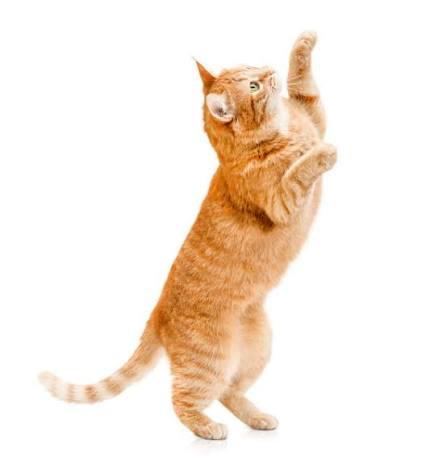

Le chat est un animal très répandu dans les foyers français. Sa popularité vient en partie de son indépendance, appréciée par de nombreux propriétaires.
Chaque race possède des besoins spécifiques, notamment en matière d'entretien du pelage.
| Race | Taille | Caractère | Espérance de vie |
|---|---|---|---|
| Européen | Moyenne | Sociable et joueur, s'adapte facilement à la vie de famille. | 12-18 ans |
| Maine Coon | Grande | Calme et affectueux. | 12-15 ans |
| Siamois | Moyenne | Vif et communicatif, réclame beaucoup d'attention. | 12-18 ans |
| Persan | Moyenne | Placide. | 12-15 ans |
| Sacré de Birmanie | Moyenne | Calme et affectueux. | 12-15 ans |
Les chats sont des carnivores obligatoires, ce qui signifie qu'ils ont besoin d'une alimentation riche en protéines animales. Par exemple :
